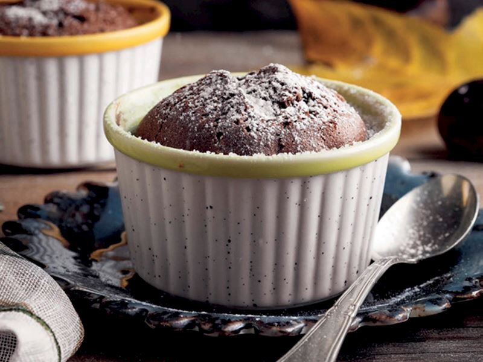

---Suffle Tarifi---
Kaç kişilik:
8-10 kişilik
Hazırlama Süresi:
20 dk
Pişirme Süresi: 45 dk

MALZEME LİSTESİ
- 3 tane yumurta (orta boy olacak)
-
Yarım su bardağı toz şeker (3 yemek kaşığı toz şeker tam olarak
iyi bana göre)
- 1 paket 80 gram bitter çikolata
- 1 yemek kaşığı dolusu tereyağı
- Yarım su bardağı un
Üst kısım için; pudra şekeri serpebilirsiniz.
NASIL YAPILIR
-
Öncelikle 220 derece de fırınımızı ısıtırız ve kalıplarımızı
tereyağı ile yağlarız.
-
Daha sonra tavamızı kısık ateşe alıp tereyağı ve çikolatayı eritip
daha sonra ocağın altını kapatıp unumuzu üzerine ilave ediyoruz ve
iyice karıştırıp yediririz.
-
Son olarak bir kapta şeker ve yumurtayı beyaz olana dek çırparız
ve hazırladığımız tereyağlı çikolata harcını yumurtanın içine
döküp biraz da öyle çırparız ve sufle kaplarımıza paylaştırırız.
-
Son olarak fırınımıza koyup 8 dakika pişiririz ve ilk sıcaklığı
çıkınca ister ters çevirip pudra şekeri döküp servis edin.
İsterseniz de kabında yiyebilirsiniz :) Deneyenlere afiyet
sufle olsun 5 kişilik çıktı bende.
Not: 7 ve 8 dk. arası pişmiş oluyor 1 dakika bile geç alsanız kek
olmuş olur. Not: Hafif olmasını isterseniz 2,5 yemek kaşığı yada 3
yemek kaşığı toz şeker koyabilirsiniz. Not: Kaplarımızı yağladıktan
sonra hafif un serpin ki kabından kolay çıksın.
Tarif:Havva Nida ARSLAN